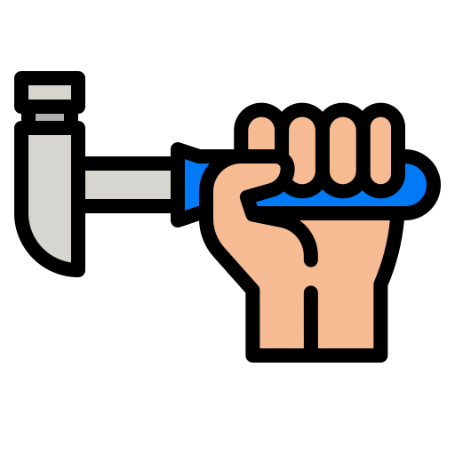
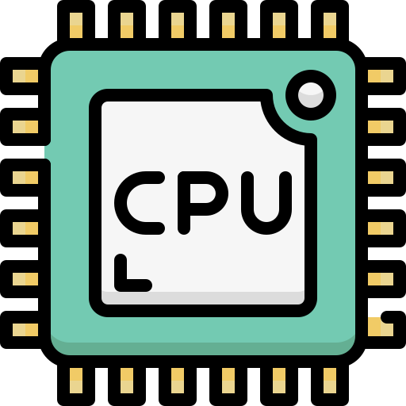

Problemas
Cortes manuais e processos lentos estão prejudicando a produtividade
Clipadores de vídeo ainda enfrentam desafios com edições demoradas e processos manuais, o que resulta em mais tempo gasto na linha de produção e menos foco na criatividade.

Edição manual consome horas preciosas
Processos manuais deixam o trabalho lento e ineficiente

Perda de tempo ao assistir vídeos longos para definir cortes

Hardware não suporta editar vídeos muito longos
Dificuldade de gerenciar grandes quantidades de conteúdo